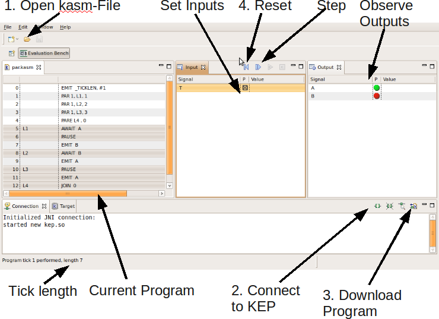

Program Execution

To execute a program, perform the following steps:
- Load ad KEP assembler file (.kasm). The program will be shown in the
left view. If the file could not be parsed, the reason for this is
shown. The error recovery is not very good: for syntax errors the position is
shown in the second line. If the post-processing failed, this is usually due
to a undefined label, or if label and argument are swapped.
Loading the program will also perform some post-compilation steps, like
assigning watcher and signal ids. Therefore the shown assembler slightly
differs from the loaded assembler. Also the actual machine-code is shown.
- Connect to the KEP. You might also want to verify the connection, this
is done with the button right to the connect button. The connection view
should say "Return string valid."
- Next you need to load the program into the instruction ROM of the
KEP. This is done via the download program button. The program is downloaded
in any case, even if the current configuration of the KEP cannot execute
this. This can lead to runtime errors: the EvalBench will not return from a
tick command. You can see the configuration of the KEP in the target view.
- Now you should reset the KEP.
After doing this, you can set the inputs and execute the program stepwise. You
can reset the KEP if you want to execute a different trace.